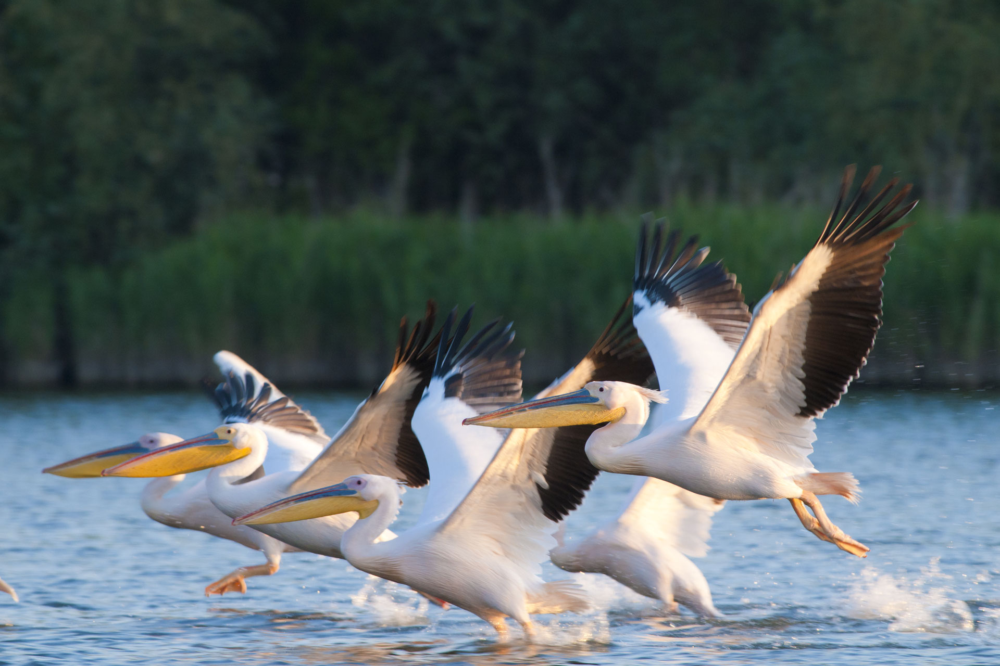
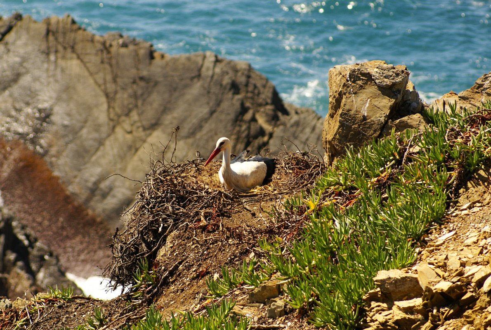
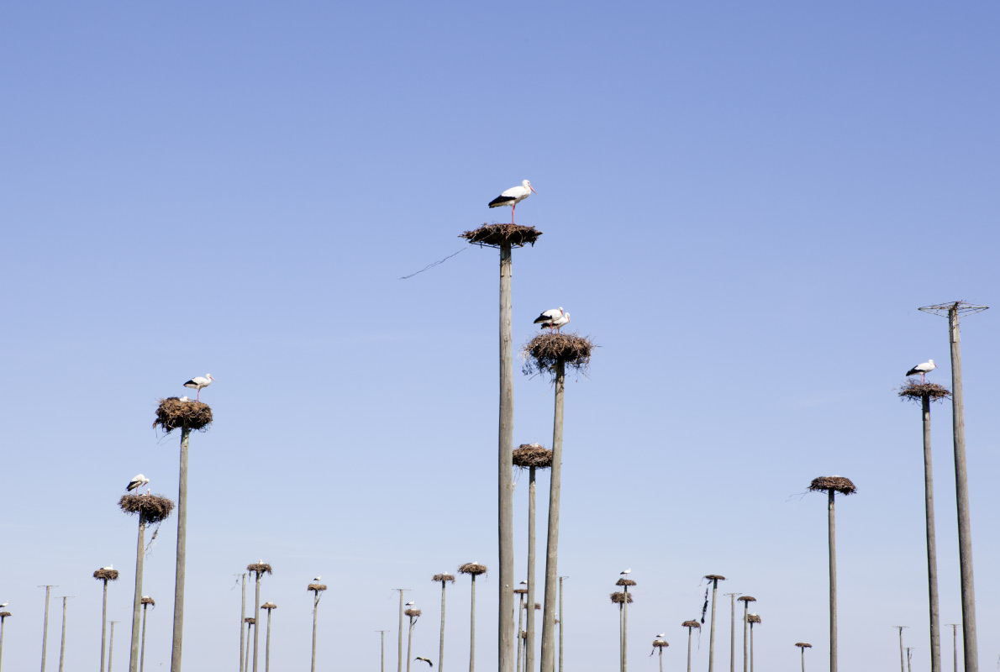
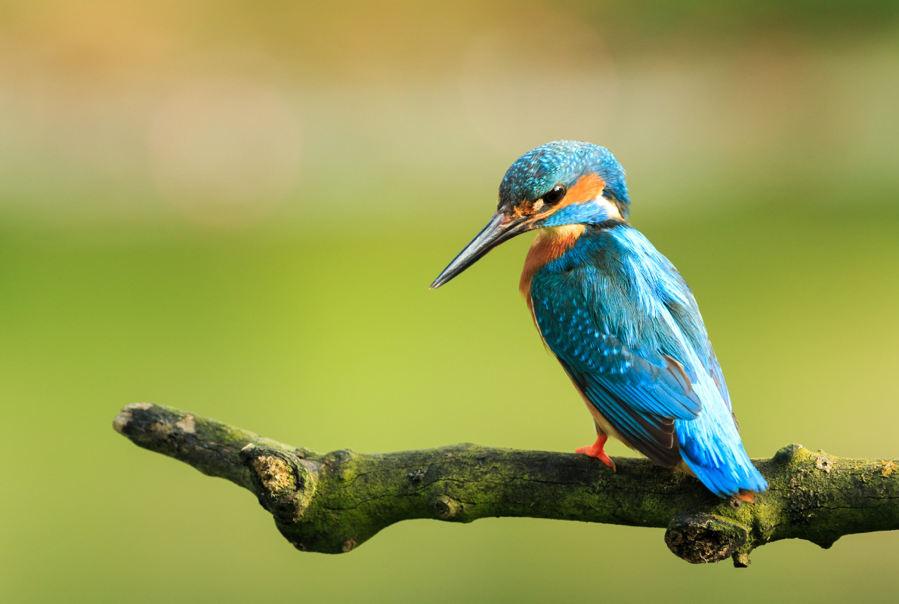

Madeira is a perfect destination for lovers of nature, relaxation and discovery.
Madeira which is certainly one of the most beautiful islands in Europe is also
one of the best destinations in Europe for birds lovers. Many species are endemic
and observable only on this island.
There are 46 different species of birds on this paradise island. Book your best
activities in Madeira now as well as your hotel at the best price for a dream holiday
on the Madeira Islands

2. Danube Delta,Romania
The Danube River Delta is a perfect place for watching birds in Romania. You will
certainly fall in love with its lush forests, beautiful lakes, and natural landscapes;
they are among the most beautiful in Europe. Plan your stay in Tulcea or in our selection
of hotels at the best prices near this natural bird reserve

3.Alentejo,Portugal
With its unspoiled beaches and nature, the Alentejo, one of the most beautiful regions
in Portugal, is a paradise for bird watchers. A clear landscape, great visibility,
all the ingredients are gathered for a perfect observation of birds in this very beautiful
region of Portugal. Castro Verde, Mértola, Sado Estuary, Guadiana Valley, are among the
best sites for bird watching in this region.
Book your hotel at the best price and head out to discover new species for a birdwatching
holiday in the Alantejo region.

4. Extremadura,Spain
Extremadura is an autonomous community of Spain. It has a common border with Portugal,
another wonderful European country for bird watching. Plan a visit to Exttramadura
(It is so rich with its different cultures) and discover its many vestiges and monuments.
Enjoy a preserved nature and one of the best destinations for bird watching in Europe.
Discover dozens of endemic species as well as migrating birds. Come and watch the Golden
Eagle (Aquila chrysaetos), the Peregrine Falcon (Falco peregrinus) or the Black Stork
(Ciconia nigra). Book your hotel at the best price and enjoy a beautiful holiday in this
beautiful region of Spain.

5. North Yorkshire,United Kingdom
Come to North Yorkshire and observe a wide variety of birds such as the Great Gray Shrike
(Lanius excubitor), the Black-necked Grebe (Podiceps nigricollis), the Goldcrest (Regulus regulus)
or the Purple Sandpiper (Calidris maritima). This destination is also perfect for lovers of large
expanses of land and beautiful scenery.
Book your hotel in York, Middlesbrough or Harrogate or one of the many places in North Yorkshire,
one of Europe's best bird watching destinations.